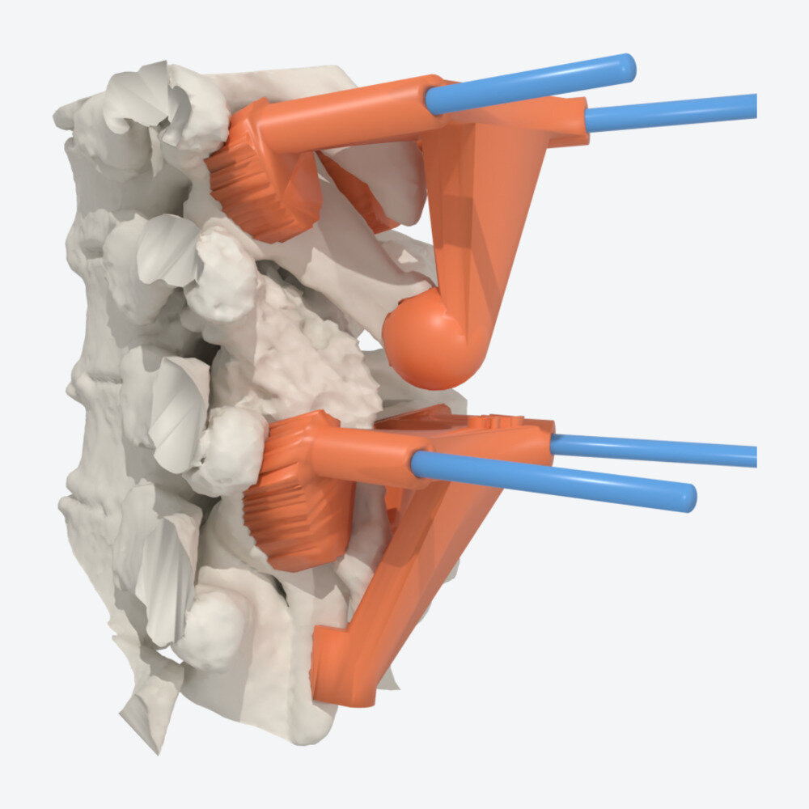
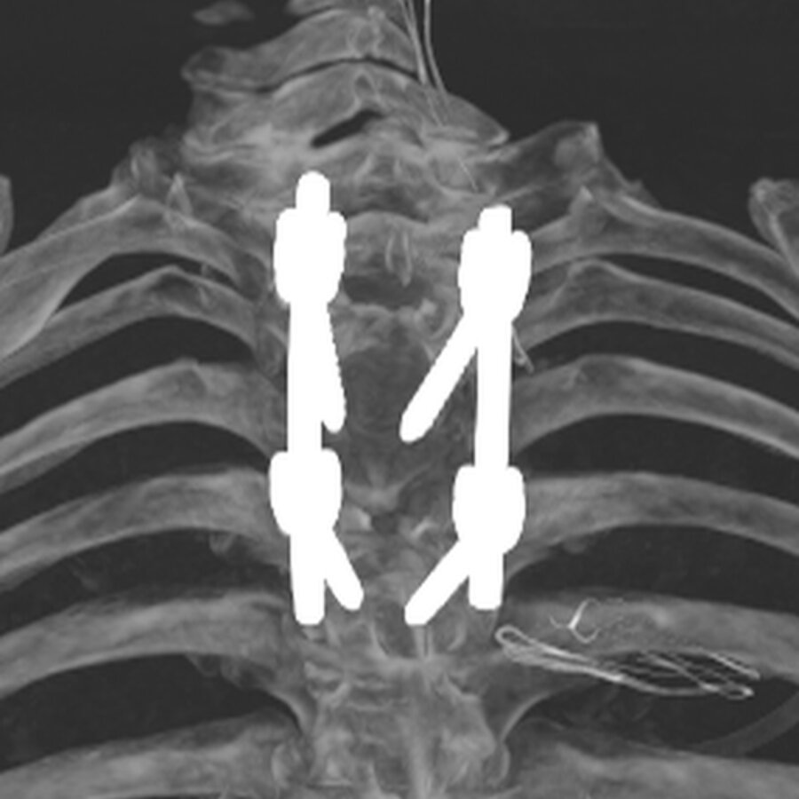

Python · done
Guided screw accuracy on postoperative CT
How far did screws placed through 3D-printed guides end up from the plan? Measured retrospectively for one patient, four thoracic pedicle screws.
- Data
- Blender plan and guide STLs (2022), postoperative CT (1 mm slices)
- Stack
- Python: pydicom, NumPy, SciPy (KD-tree ICP); Blender for plan export
- Result
- Screw tips 2.3 mm from plan on average; none more than 1 mm toward the canal
Clinical context
Patient with metastases at Th3 and Th5 (Case 6 of the 3D printing series). One drill guide per level, decompression, four pedicle screws placed through the guides. At the time nobody measured how close the screws came to the plan. The plan and the postoperative CT were both still on disk, so the question could be answered afterwards.


How it was measured
The bone model from the Blender plan was matched to the bone on the postoperative CT, which puts the planned trajectories into the postoperative scan. Each screw axis was taken from the metal of the screw shaft. For every screw: distance from the planned line at the entry point and at the tip, and the angle between plan and screw.
Results
| Screw | Entry, mm | Tip, mm | Angle, ° |
|---|---|---|---|
| Th3 right | 4.7 | 3.6 | 12.2 |
| Th3 left | 2.3 | 2.4 | 3.2 |
| Th5 right | 0.8 | 1.8 | 3.4 |
| Th5 left | 2.6 | 1.5 | 2.7 |
On average the screws entered 2.6 mm and ended 2.3 mm from the planned trajectory. No screw deviated more than 1 mm toward the spinal canal. Three screws were within about 3° of the plan; one, Th3 right, was tilted about 12° in the craniocaudal direction.

Limitations
- One patient, four screws, measured retrospectively.
- Any guidance method, navigation or guides, has some error. Here it may come from the guide not sitting perfectly tight on the vertebra or from slight play of the drill in the guide sleeve.
- The measurement itself carries about 1 mm of registration error.
- Next: the same measurement for the other guided cases if their postoperative CT can be found.